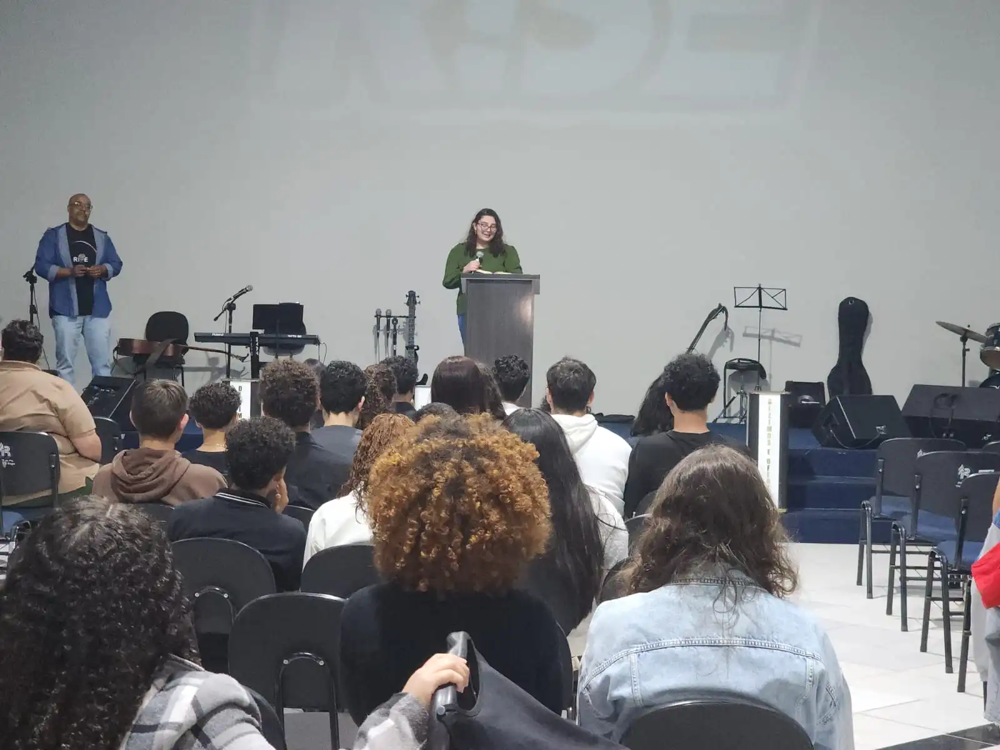

Momentos Especiais
Relembre os encontros anteriores e se inspire para o que está por vir


';">
2ª Igreja Presbiteriana Renovada de Sorocaba
"Oh! quão bom e quão suave é que os irmãos vivam em união!" Salmo 133:1
Data
20 de Setembro, 2025
Sábado às 19h
Local
2ª IPR Sorocaba
Rua Sandro Antônio Mendes,
396 - Pq. Vitória Régia
Baseado no Salmo 133:1, o AVIVA JOVEM celebra a beleza da unidade entre os irmãos. Venha experimentar como é bom e agradável quando os jovens se reúnem em nome de Jesus, vivendo momentos de adoração intensa, comunhão verdadeira e renovação espiritual.
"Oh! quão bom e quão suave é que os irmãos vivam em união! É como o óleo precioso sobre a cabeça, que desce sobre a barba, a barba de Arão, e desce à orla das suas vestes."
- Salmo 133:1-2
Momentos intensos de louvor e adoração que vão tocar seu coração
Mensagens relevantes e transformadoras para a juventude atual
Conecte-se com outros jovens e fortaleça sua caminhada cristã
Conheça os ministros que Deus preparou para esta noite especial
Um servo apaixonado pela obra do mestre, dedicando sua vida ao ministério e ao cuidado das ovelhas de Cristo.
@davilsonjdearaujoConvicta da vocação e chamado do Mestre, dedica seus dons a serviço da Igreja de Jesus.
@dilzeduarteRelembre os encontros anteriores e se inspire para o que está por vir
Assista aos melhores momentos dos encontros anteriores
Momentos de Adoração
Jovens
Data: Sábado, 20 de Setembro de 2025
Horário: 19h
Igreja: 2ª Igreja Presbiteriana Renovada de Sorocaba
Endereço: Rua Sandro Antônio Mendes, 396 - Pq. Vitória Régia - Sorocaba/SP
Fotos e vídeos dos momentos de adoração


Alguns dos momentos registrados durante o culto


Amigos, irmãos e visitantes que participaram do culto
Ouça novamente a playlist que embalou nossa adoração
Playlist Oficial no Spotify